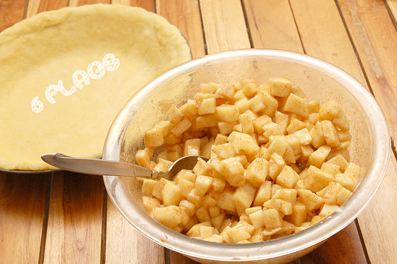

自创得奖食谱，美国苹果派
没有食物比的了一个热的，新鲜，自创苹果派。自美国是甚而国家之前，人们做苹果饼。香客给美国在16世纪带来了这可口食物。从那以后，这个点心成为了美国文化象征。商店买来的苹果饼就是不可能与自创那些比较。从头做苹果饼的确很耗时，但它确定地值得。首先，您将做一个片状，黄油外壳。其次，您用新鲜，酸的苹果和香料将填装它象桂香和肉豆蔻。 终于，您分层堆积外壳的小条装填做格子饼上面。这份食谱赢取了在许多美国集市的第一名。有了我们的食谱，您将看见那做一个可口，自创苹果饼真正地是一样容易象饼!

外壳成份
- 2杯面粉
- 1茶匙盐
- 黄油棍子的3/4
- 5把大汤匙冷水
- 1个蛋和一些牛奶(为掠过，做金黄釉)
填装的成份
- 1/3杯子糖
- 1/3杯子红糖
- 1/4茶匙盐
- 1个茶匙桂香
- 1/2茶匙肉豆蔻
- 3把大汤匙面粉
- 6个到8个中型苹果
如何做食谱
- 预先加热烤箱到400度
- 保证您有一干净，宽敞桌面可利用为揉和展开面团。

- 安置面粉、盐和黄油在一个大碗。与酥皮点心搅拌器或叉子，击碎黄油，直到它形成微小的球用面粉。然后慢慢地加水。

- 揉用被撒粉于的手，直到一个大面团球形成。分裂球在一半并且包裹一片断在塑料套。安置被包裹的面团在冰箱。选择是包裹两个面团球和在进行冷藏他们在30分钟下一个步骤之前。

- 在被撒粉于的柜台上面，比饼平底锅开始滚动面团入圈子形状大约2英寸(5.1 cm)大直径。某些人喜欢安置塑料套层数在面团顶部，当它滚动，以便它不会坚持滚针。

- 慢慢地举被铺平的面团柜台上面通过完全包裹它在滚针附近。

- 展开面团在平底锅，小心没有让它撕毁。适合它入平底锅，按它反对所有边。

- 切除伸出的边缘。离开关于1⁄4英寸(0.6 cm)额外面团在饼平底锅。

- 安置馅饼外皮在冰箱。

- 做装填。剥并且切苹果成一英寸的片断大约1/8厚实或砍他们入1/2立方体。放他们入一个大碗并且混合用糖(白色和棕色)，盐、柠檬汁、面粉、肉豆蔻和桂香(报道混合物上面的震动)。放在冰箱里。

- 展开面团剩余的球在被撒粉于的表面，象您以前做了。被切的上面： 柔和地折叠它在一半并且做4到5半寸长切片沿折叠和4个切片在被折叠的片断的中心。这些将允许装填对而不是呼吸断裂通过边。展开顶面外壳设置它在旁边。格子上面： 因为它将产生，切展开的面团成许多1宽带材。

- 去除馅饼外皮和填装从冰箱。

- 倾吐装填入馅饼外皮，伸长它用匙子的后面。在中心应该有填装整个平底锅和堆积在边缘之上至少一英寸的足够的装填。

- 掠过馅饼外皮的边缘用一个被搅拌的蛋。

- 放置顶面外壳在饼。
被切的上面： 切除剩余边缘用牛油刀。采取面对的拇指并且安置他们在边缘。推挤拇指下来和朝彼此。在整个饼附近做此密封它。
格子上面： 安置酥皮点心小条横跨苹果的上面在十字形样式，然后一起编织他们创造格子作用。切除伸出的剩余酥皮点心并且按边缘下来入外缘如早先被描述。

- 洒牛奶在上面或掠过格子与蛋。这将帮助变褐外壳。拂去桂香和糖的灰尘在顶面外壳为一种额外口味。

- 烘烤在400ºF (200ºC) 15分钟。转动下来烤箱对375ºF (190ºC) 45分钟。去除当顶面外壳是金黄褐色时。

- 让饼冷却45分钟到1个小时在室温在服务之前。

- 现在您可以享用了! 一个美丽，自制苹果饼!